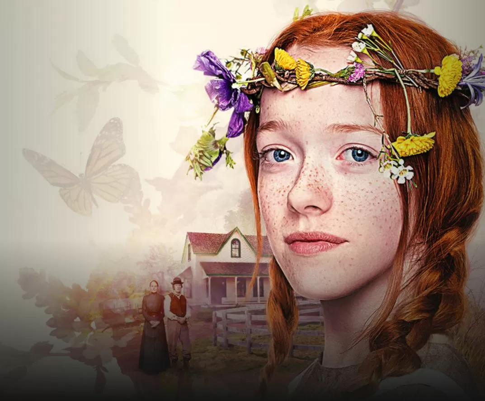

Anne with an E é uma série canadense transmitida originalmente pelo canal CBC Television. A história acompanha a vida de Anne Shirley, uma jovem órfã que, após uma infância de abusos entre orfanatos e casas de estranhos, é enviada por engano para viver com um casal de irmãos em idade avançada. Com o passar do tempo, a pequena garota de 13 anos transforma a vida de Marilla, Matthew Cuthbert e de toda a cidade com seu jeito extrovertido, sua inteligência e imaginação brilhante. As aventuras de Anne abordam temas atemporais e de atual relevância como identidade, feminismo, bullying e preconceito.

Número de temporadas: 3
Gêneros: Infantil, Drama, Obra de Época, Amadurecimento
Emissoras originais: Netflix, CBC
Data de lançamento: 19 de março de 2017
Episódio final: 24 de novembro de 2019